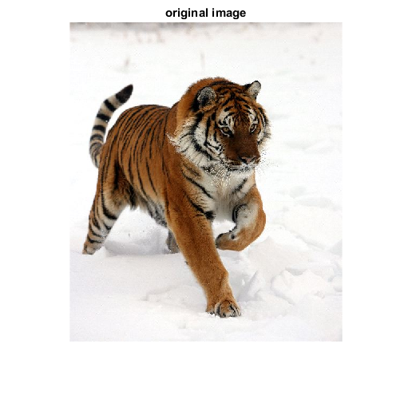
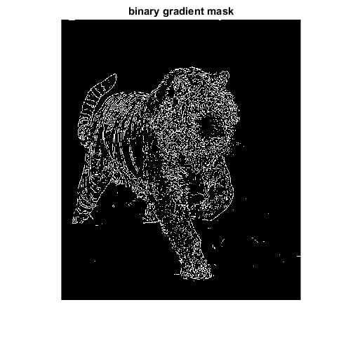
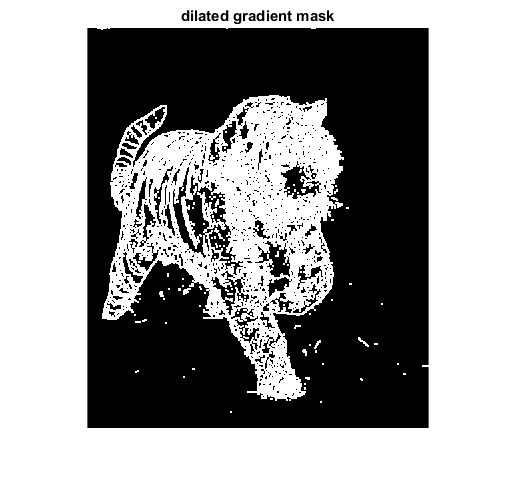
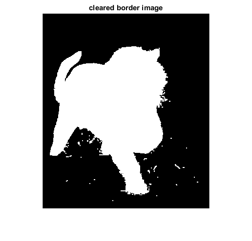
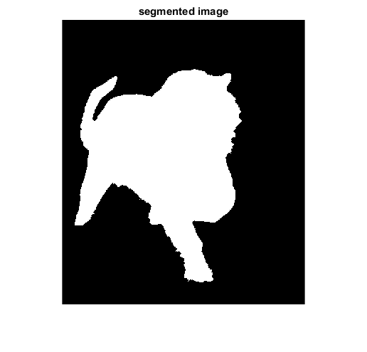
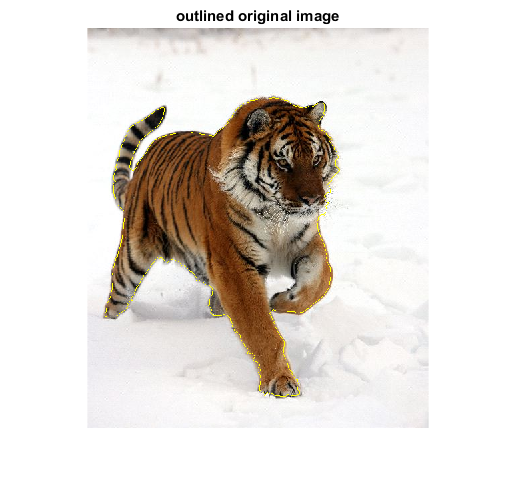

Contents
Nishikanto Sarkar Reg No. 2012331071
Edge base Segmentation
Detecting a Object Using edge base Image Segmentation
Read image from the link
I = imread('F:\Matlab\Matlab Works\Edge Base Segmentation\tiger.jpg'); J = I; figure, imshow(I), title('original image'); I = rgb2gray(I); %convert rgb to gray
Warning: Image is too big to fit on screen; displaying at 67%
Here we use 'Roberts' operator to calculate the threshold value. We then tune the threshold value and use again to obtain a binary mask that contains the segmented object.
[~, threshold] = edge(I, 'Roberts'); fudgeFactor = .4; BWs = edge(I,'Roberts', threshold*fudgeFactor); figure, imshow(BWs), title('binary gradient mask');
Warning: Image is too big to fit on screen; displaying at 67%
Compared to the orginal image, in binary gradient mask has gaps in lines surrounding the object in the gradient mask. These linear gaps will disapper if the sobel image is dilated using liner stucturing elements. This linear structuring elements can create with the strel function.
se90 = strel('line', 3, 90); se0 = strel('line', 3, 0); % Here we use imdilate function for dilating the binary gradient mask. BWsdil = imdilate(BWs, [se90 se0]); figure, imshow(BWsdil), title('dilated gradient mask');
Warning: Image is too big to fit on screen; displaying at 67%
Fill Interior Gaps
We use imfill to fill interior gaps
BWdfill = imfill(BWsdil, 'holes'); figure, imshow(BWdfill); title('binary image with filled holes');
Warning: Image is too big to fit on screen; displaying at 67%
Remove Connected Objects on Border
If there is object that connected to the border and that is not our object then we can remove it by using imclearborder function. The connectivity in the imclearborder function was set to 4 to remove diagonal connections.
BWnobord = imclearborder(BWdfill, 4);
figure, imshow(BWnobord), title('cleared border image');
Warning: Image is too big to fit on screen; displaying at 67%
imerode function is use to make the segmented object look natural. the image is eroding twice with a diamond structuring element and that is created by strel function.
seD = strel('diamond',2); BWfinal = imerode(BWnobord,seD); BWfinal = imerode(BWfinal,seD); figure, imshow(BWfinal), title('segmented image');
Warning: Image is too big to fit on screen; displaying at 67%
Here i display a yellow line in the original image for mark the object that we detected.
BWoutline = bwperim(BWfinal); SegoutR = J(:,:,1); SegoutG = J(:,:,2); SegoutB = J(:,:,3); %now set yellow, [255 255 0] SegoutR(BWoutline) = 255; SegoutG(BWoutline) = 255; SegoutB(BWoutline) = 0; SegoutRGB = cat(3, SegoutR, SegoutG, SegoutB); figure, imshow(SegoutRGB), title('outlined original image');
Warning: Image is too big to fit on screen; displaying at 67%